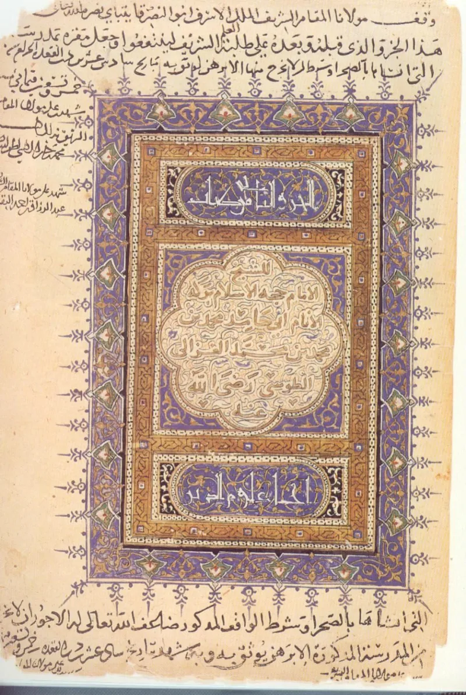
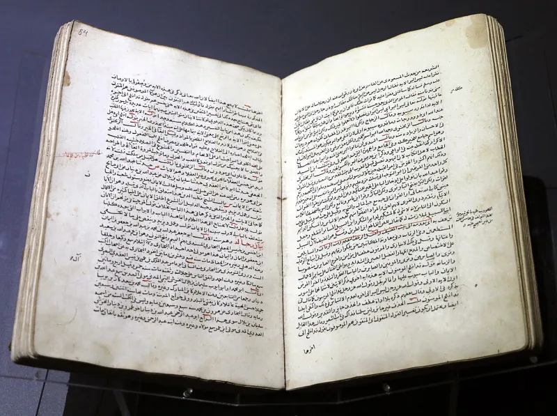

Muslim scholars have a real answer here. Say so before your friend does.
This topic is explosive and almost always unhelpful in a friendship. It is here for completeness.
Never open with it. Your friend very likely finds the practice as terrible as you do.
Treating him as its defender is unjust and ends the conversation.
The schools differ. The Shafi'i manual Umdat al-Salik, known as Reliance of the Traveller, rules circumcision obligatory for both sexes at e4.3.
Its English edition was certified by al-Azhar. It describes the female form as cutting the prepuce of the clitoris, though translators dispute whether the Arabic bazr means the prepuce or the clitoris itself.
Hanbalis were split between obligatory and honourable. Hanafis and Malikis called it recommended, a makrumah, not required.
IslamQA 60314 still defends it as part of the fitrah.
Umm Atiyyah reports that Muhammad said "do not cut severely, as that is better for a woman and more desirable for a husband" (Sunan Abi Dawud 5271). Abu Dawud himself called it not strong, and mursal.
Al-Iraqi and al-Azimabadi agreed. Al-Albani later graded it authentic through supporting chains.
Practice follows school geography. It is found in Shafi'i Southeast Asia, in Egypt, and in the Horn of Africa.
But the custom is older than Islam, and non-Muslims there do it too. The 2006 al-Azhar conference condemned it as criminal aggression.
Grand Mufti Ali Gomaa forbade it by fatwa in 2007. The Fiqh Council of North America ruled it prohibited outright.
Genuinely arguable, and state every clause or none. The textual basis is weak, by Abu Dawud's own grading, and the Quran says nothing about it.
Major authorities now forbid it, citing la darar, no harm. The custom is regional and older than Islam.
Yet classical fiqh canonised rather than abolished it, one school made it obligatory, and IslamQA defends it today.
"You raised women's status, so I will be straight with you. May I ask what you make of Reliance of the Traveller here?"


They say the hadith is weak, and major scholars now forbid the practice.
Muslim scholars who oppose the practice argue from inside the tradition. The Umm Atiyyah hadith is weak by Abu Dawud's own grading. So no duty can be built on it. Nothing in the Quran touches the practice at all. And sharia's governing rule of la darar, no harm, forbids anything medicine shows to be harmful.
The Fiqh Council of North America has ruled it forbidden outright. So has Grand Mufti Ali Gomaa. The 2006 al-Azhar conference called it punishable aggression.
Defenders of the classical position answer differently. The fiqh, they insist, only ever allowed a token cut. They point to the do not cut severely wording itself. Severe forms, such as infibulation, are African custom older than Islam. The jurists never endorsed them, and Christians and animists in the same regions practise them too.
Handle with great care: state every clause or none, and never open with it.
This is graded contested because the honest picture cuts both ways. The textual basis is weak, by Abu Dawud's own grading, and there is no Quranic support. Major Muslim authorities now prohibit the practice, and the custom is regional and older than Islam. Yet classical fiqh made it canon rather than abolishing it. One school made it obligatory. And IslamQA defends it today. State every one of those clauses or state none.
The pastoral guidance is emphatic. This topic is explosive and almost always counterproductive in personal evangelism. It exists in this database for completeness, and for the rare case where a Muslim friend has raised comparisons about women's status and expects candour in return.
Never open with it. Never use it as a weapon. Lead with listening. A Muslim friend likely finds the practice as abhorrent as you do, and treating him as its defender is both unjust and conversation-ending.